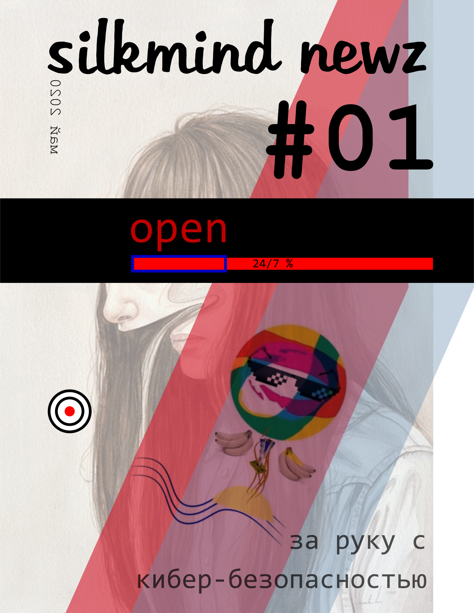

Ежемесячный журнал о сознании, хакерстве, искусстве проникновения и феноменах работы мозга и тела.
Журнал особенно подходит для практического психолога.

прототип обложки которая изменится
Рубрики:
жизнь
сознание
наука
животный мир
растения
научные открытия
идеи для научных экспериментов
drug research
финансы
делаем деньги
история успеха
toolz
где поучиться
лайфхаки
mems
история взлома
игры и игрофикация
где поучиться
визуал
игры восприятия
о журнале
авторам
call@action
культура
мир, страны, страна и космос
just do it
психотехники
боевые искусства
ней-джитсу
навыки
практика фокусировок
знакомства
обмен контактами с душой
профиль одного из нас
предстоящие мероприятия
журналистика
фотография
искусственный интеллект
нейронные сети
алгоритмы
операционные системы
чат боты
музыка
создание музыки
дизайн
дизайн интерьеров
коливинг
практическая психология
философия
афоризмы
антипсихиатрия
личность и идентичность, авторство жизни
маркетинг
математика
что почитать
мир вокруг пальца
Авторам желающиим написать статью - добро пожаловать! Пишите на yuri [@] silkmind dot com. В теме прошу указывать "silkmind visionz zine: <название статьи>", где название статьи - примерное название.
Первый номер не будет иметь точной тематики и каким он будет зависит от вас. Журнал будет международным с русской и английской версией. HTML вёрсткой, pdf и несколько печатных экземпляров.